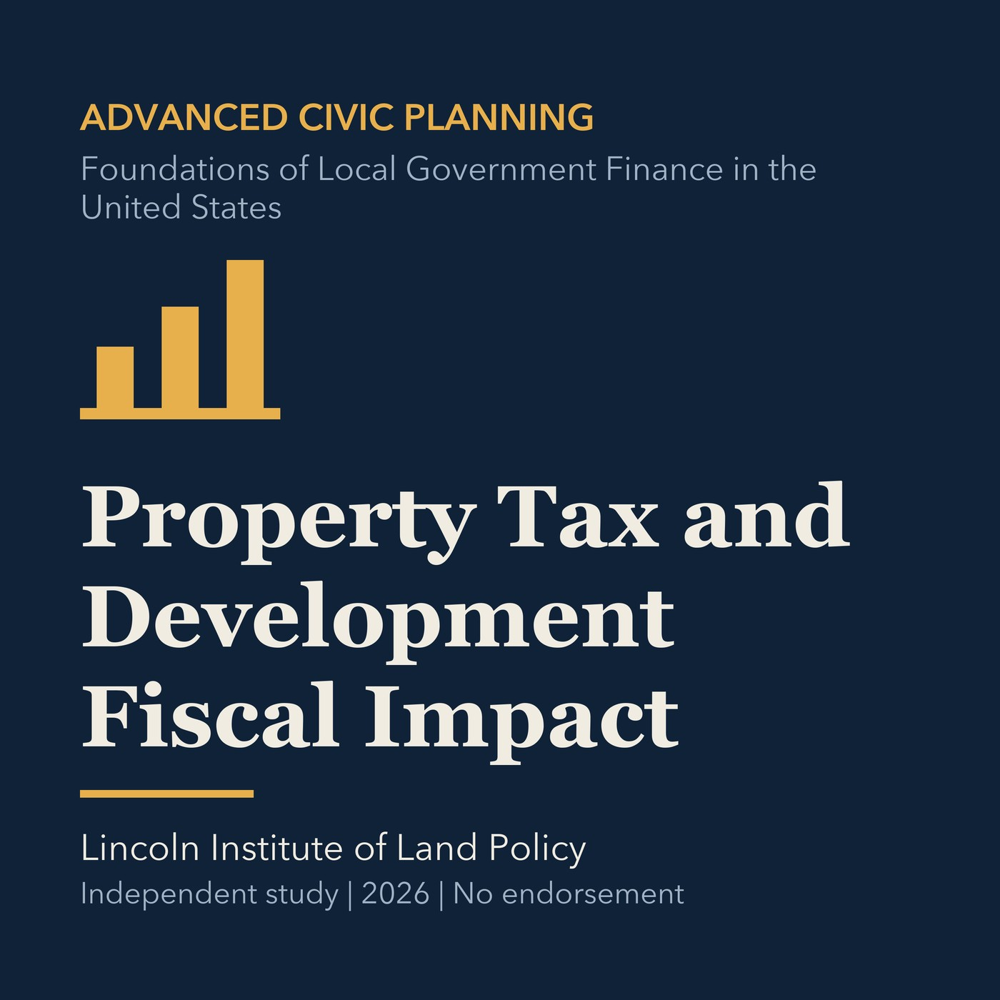

EPISODE 30
Property Tax and Development Fiscal Impact
Tests development fiscal claims against property tax allocation, service costs, and timing.

- Stable GUID
afa189ff-673c-5422-99f1-0ce2a720ec62- Release
- advanced-civic-planning-v2026.3
- SHA-256
365ceae6d9aa08dc0394e1d7fe6267f0c6374aecd20a0854d9171e726ae9c70d